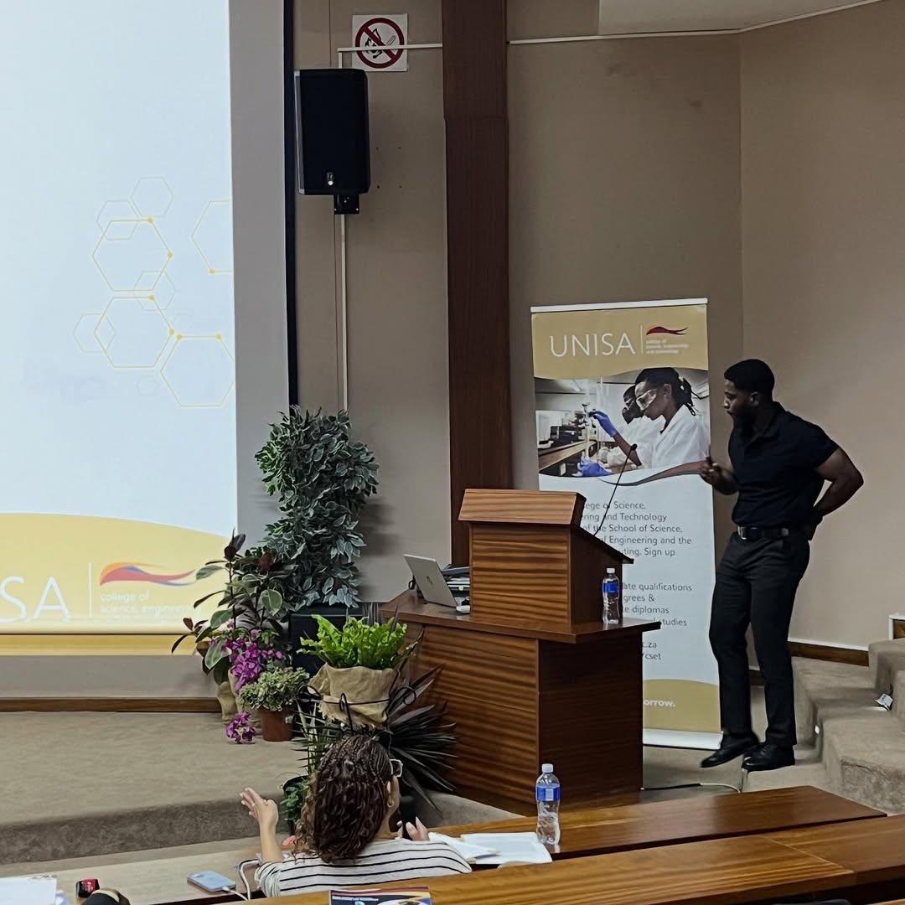
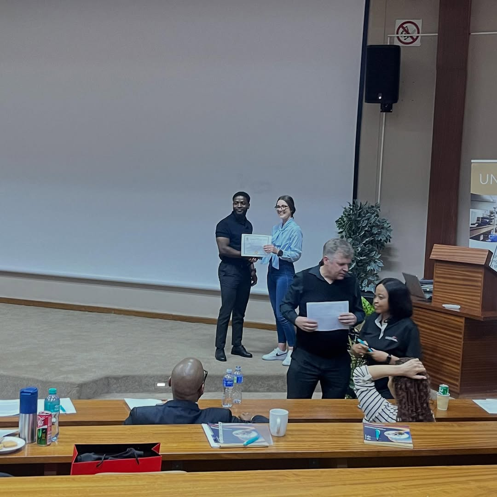
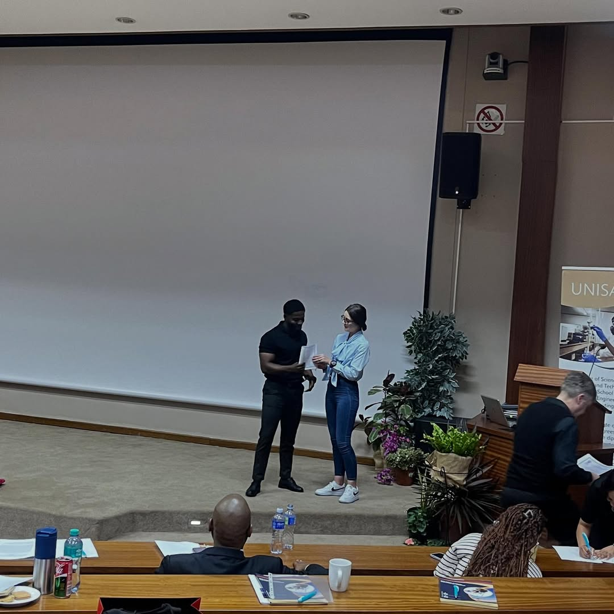
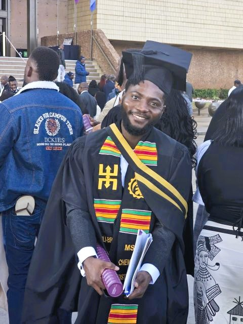
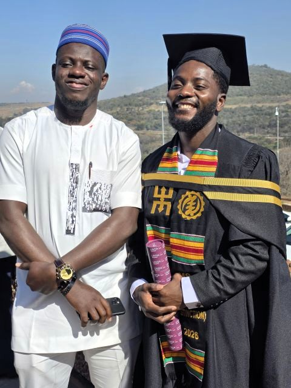
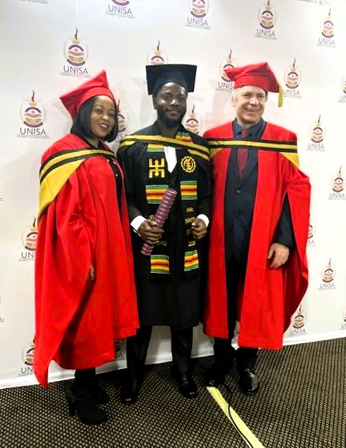
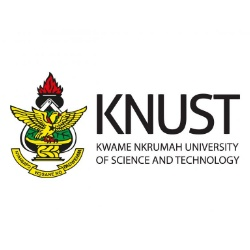

ACHIEVEMENTS







I am a chemistry researcher and PhD candidate at UNISA focused on computational chemistry, machine learning, and AI-driven drug discovery for cancer, malaria, and tuberculosis, with a Master’s of Science in Chemistry (Distinction) and growing experience in international research publications and presentations.






Oku, Deli-Bright N.T.; Babatunde, Damilare D.; Nuapia, Yannick*; More, Garland K.; Chokwe, Ramakwala Christinah*. “Harnessing Machine Learning for the Virtual Screening of Natural Compounds as Both EGFR and HER2 Inhibitors in Colorectal Cancer: A Novel Therapeutic Approach”, ACS Omega, 2025. Published, November 19, 2025.
Deli-Bright Nii Tettey Oku, Ramakwala Christinah Chokwe. Harnessing machine learning for the virtual screening of natural compounds as both EGFR and HER2 inhibitors in colorectal cancer: A novel therapeutic approach [abstract]. In: Proceedings of the AACR Special Conference in Cancer Research: Artificial Intelligence and Machine Learning; 2025 Jul 10-12; Montreal, QC, Canada. Philadelphia (PA): AACR; Clin. Cancer Res. 2025; 31(13_Suppl): Abstract nr A001. doi:10.1158/1557-3265.AIMACHINE-A001
Deli-Bright Nii Tettey Oku*, Thandeka Hlongwa, Ramakwala Christinah Chokwe*. “Computational Identification of PfHDAC1 Epigenetic Modifiers from Artemisia afra as Potential Antimalarials Using Machine Learning-Based Virtual Screening and Molecular Docking” ChemistrySelect, 2026. (Manuscript submitted).
Oku, Deli-Bright N.T.; Nuapia, Yannick; More, Garland K.; Chokwe, Ramakwala Christinah. “Chemical Profiling and Scaffold-Based Drug Discovery Analysis of Bioactive Compounds from Ceratonia siliqua L. with Biological Validation” Journal of Chemical Information and Modeling, 2026 (Manuscript submitted).
Garland K. More*, Mpho P. Ngoepe, Deli-Bright N.T. Oku, Ramakwala Christinah Chokwe “Analysis of the structure–activity relationship of acacetin, betulinic acid, and scopoletin as anti-inflammatory agents: an in silico and scaffold analysis strategy for compounds commonly derived from Asteraceae family”. Computational Biology and Chemistry, 2026 (Manuscript in preparation).
Oku, Deli-Bright N.T.; Chokwe, Ramakwala Christinah. “Computational Study and Scaffold Analysis of Potential Small-Molecule Inhibitors Targeting Mycobacterium tuberculosis Enoyl-ACP Reductase (InhA)” (Manuscript in preparation).
Oral Presentation: South African Chemical Institute (SACI) Young Chemist Symposium, University of South Africa, Florida. “LC–MS/MS, Machine Learning and Virtual Screening of Anti-cancer and Anti-inflammatory Compounds from Ceratonia siliqua L.” Award: 1st Prize – MSc Category (October 2025)
Poster Presentation: AACR Special Conference on AI and Machine Learning, Montreal, Canada. “Harnessing Machine Learning for the Virtual Screening of Natural Compounds as Both EGFR and HER2 Inhibitors in Colorectal Cancer.” Abstract published in Clinical Cancer Research, Abstract A001. (July 2025)
Best Oral Presenter – 1st Prize (MSc Category), SACI Young Chemist Symposium October 2025
M & D Bursary (UNISA College of Science, Engineering and Technology) Feb 2023
KBN Scholarship, KNUST, Kumasi, Ghana August 2017
Participant of National Science and Math Quiz (high school) September 2014
Overall best students’ Award (high school) March 2013
